23 Chemical energetics
Lattice energy, Born–Haber cycles, solution and hydration enthalpies, entropy and Gibbs free energy
Learning objectives
学完本章后，你应该能够：
- define and use enthalpy change of atomisation, lattice energy, electron affinity, enthalpy of solution and enthalpy of hydration;
- construct and interpret Born–Haber cycles, and use them to calculate lattice energy;
- explain the factors affecting lattice energy and enthalpy of hydration (ionic charge and ionic radius);
- define entropy and predict whether entropy increases or decreases in a given process;
- calculate standard entropy change \(\Delta S^\ominus\) from standard entropy values;
- use the Gibbs equation \(\Delta G^\ominus=\Delta H^\ominus-T\Delta S^\ominus\) and judge reaction feasibility;
- explain how temperature affects feasibility for different signs of \(\Delta H^\ominus\) and \(\Delta S^\ominus\).
23.1 Lattice energy and Born–Haber cycles
Enthalpy change of atomisation（原子化焓变）
The standard enthalpy change of atomisation, \(\Delta H^\ominus_{\mathrm{at}}\), is the enthalpy change when 1 mole of gaseous atoms is formed from its element under standard conditions (298 K and 101 kPa).
标准条件是本考纲统一使用的 298 K 温度与 101 kPa 压力。由于把元素拆成单个气态原子必然要破坏原子之间的键，\(\Delta H^\ominus_{\mathrm{at}}\) 总是吸热（endothermic）、恒为正。
例如：
\[\mathrm{Na(s) \rightarrow Na(g)} \qquad \Delta H^\ominus_{\mathrm{at}}=+107\ \mathrm{kJ\,mol^{-1}}\]
\[\mathrm{Hg(l) \rightarrow Hg(g)} \qquad \Delta H^\ominus_{\mathrm{at}}=+61\ \mathrm{kJ\,mol^{-1}}\]
注意汞在标准状态下是液体，因此它的原子化焓是从液态变为气态。
Worked example · 笔记例题
写出原子化焓变的方程
写出以下元素的 standard enthalpy change of atomisation 的方程：
- Potassium（钾）
- Mercury（汞）
Answer:
- \(\mathrm{K(s) \rightarrow K(g)}\)：钾在标准状态下是固体；
- \(\mathrm{Hg(l) \rightarrow Hg(g)}\)：汞在标准状态下是液体。
Lattice energy（晶格能 / 晶格焓）
The lattice energy, \(\Delta H^\ominus_{\mathrm{latt}}\), is the enthalpy change when 1 mole of an ionic compound is formed from its gaseous ions, under standard conditions.
晶格能描述的是「气态离子结合成 1 mol 离子晶体」这一过程。因为正负离子之间极强的静电吸引会释放大量能量，所以晶格能总是放热（exothermic）、恒为很大的负值。晶格能数值越负，说明晶格内离子键越强、晶体越稳定。
晶格能无法通过单一实验直接测定，需要用能量循环（energy cycle）间接计算。用方程式表示时，必须写对状态符号（state symbols）与离子电荷：
\[\mathrm{Mg^{2+}(g) + 2Cl^{-}(g) \rightarrow MgCl_2(s)} \qquad \Delta H^\ominus_{\mathrm{latt}} < 0\]
Worked example · 笔记例题
写出晶格能的方程
写出表示以下离子化合物 lattice energy 的方程：
- Magnesium oxide（氧化镁）
- Lithium chloride（氯化锂）
Answer:
- \(\mathrm{Mg^{2+}(g) + O^{2-}(g) \rightarrow MgO(s)}\)；
- \(\mathrm{Li^{+}(g) + Cl^{-}(g) \rightarrow LiCl(s)}\)。
Electron affinity（电子亲和能）
The first electron affinity, \(EA_1\), is the enthalpy change when 1 mole of electrons is added to 1 mole of gaseous atoms to form 1 mole of gaseous ions with a single negative charge, under standard conditions.
\[X(g)+e^- \rightarrow X^-(g)\]
第一电子亲和能通常放热（exothermic、为负值），因为电子被原子核吸引会释放能量。
The second electron affinity, \(EA_2\), is the enthalpy change when 1 mole of electrons is added to 1 mole of gaseous 1− ions to form 1 mole of gaseous 2− ions.
第二、第三电子亲和能吸热（endothermic、为正值），因为要把电子加到已经带负电的离子上，需要克服电子与负离子之间的斥力。
影响电子亲和能的因素
与电离能类似，电子亲和能的大小取决于原子核对外来电子的吸引强弱，受三个因素影响：
- Nuclear charge（核电荷）：核电荷越大，吸引越强，\(EA_1\) 越放热；
- Distance（距离）：外层电子离核越远，吸引越弱；
- Shielding（屏蔽效应）：电子层越多，屏蔽越强，吸引越弱。
Group 16 / 17 的纵向趋势：往下走 \(EA_1\) 一般越来越不活泼（less exothermic），因为离子半径增大、屏蔽增强。例外是每族的第一个元素（氧、氟）：氟的原子半径很小、电子密度高，加入的电子与已有电子斥力大，所以 \(EA_1\) 比氯更不活泼。
Born–Haber cycles（Born–Haber 循环）
A Born–Haber cycle is a specific application of Hess’s Law to ionic compounds, used to calculate the lattice enthalpy which cannot be measured directly by experiment.
循环的基本规则：
- 图中能量向上增加（energy increases going up）；
- 向上的箭头 = 吸热（endothermic），向下的箭头 = 放热（exothermic）；
- 起点通常画在约三分之一高度处，即元素在标准状态下的能量水平线；
- 循环通常包含：formation（生成）、atomisation（原子化）、ionisation（电离能）、electron affinity（电子亲和能）、lattice enthalpy（晶格焓）。
下面是氯化钠的完整 Born–Haber 循环：
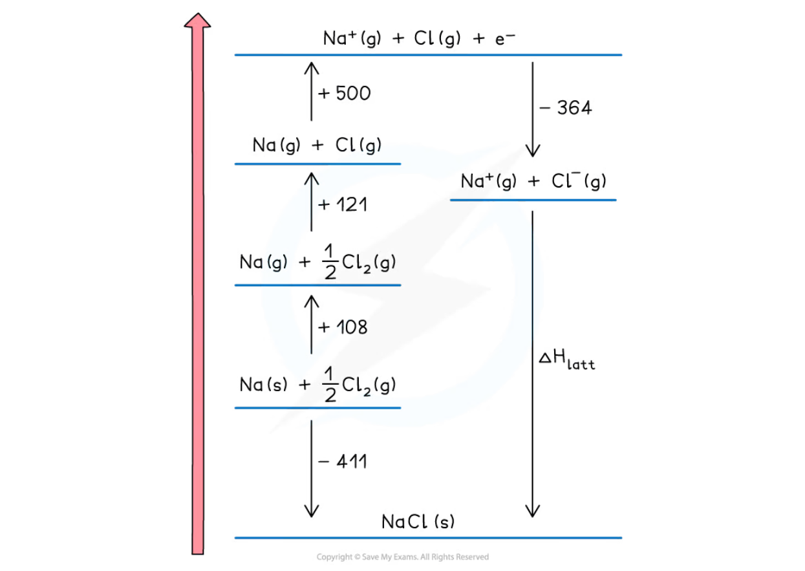
Worked example · 笔记例题
构造 KCl 的 Born–Haber 循环
构造一个可用于计算氯化钾晶格能的 Born–Haber 循环。每一步的焓变类型如下：
| Step | Enthalpy change |
|---|---|
| \(\mathrm{K(s) \rightarrow K(g)}\) | \(\Delta H^\ominus_{\mathrm{at}}(K)\) |
| \(\mathrm{K(g) \rightarrow K^{+}(g) + e^-}\) | first ionisation energy |
| \(\mathrm{\tfrac{1}{2}Cl_2(g) \rightarrow Cl(g)}\) | \(\Delta H^\ominus_{\mathrm{at}}(Cl)\) |
| \(\mathrm{Cl(g) + e^- \rightarrow Cl^{-}(g)}\) | first electron affinity |
| 求和 | \(\Sigma\, \Delta H\)（原子化 + 电离能 + 电子亲和能） |
再对晶格焓应用 Hess’s Law 即可求出 \(\Delta H^\ominus_{\mathrm{latt}}\)。
Answer:
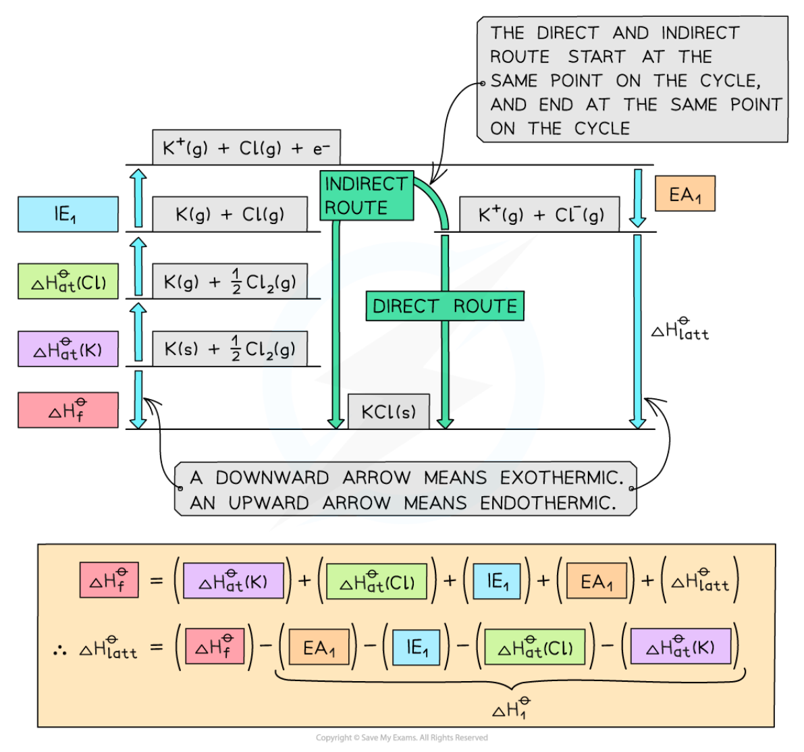
向上箭头代表吸热，向下箭头代表放热。直接路径（formation）与间接路径的焓变相等。
Worked example · 笔记例题
构造 MgO 的 Born–Haber 循环
氧化镁涉及两个电离能和两个电子亲和能（氧的 \(EA_1\) 与 \(EA_2\)），循环比 KCl 多两步：
| Step | Enthalpy change |
|---|---|
| \(\mathrm{Mg(s) \rightarrow Mg(g)}\) | \(\Delta H^\ominus_{\mathrm{at}}(Mg)\) |
| \(\mathrm{Mg(g) \rightarrow Mg^{+}(g) + e^-}\) | \(IE_1\) |
| \(\mathrm{Mg^{+}(g) \rightarrow Mg^{2+}(g) + e^-}\) | \(IE_2\) |
| \(\mathrm{\tfrac{1}{2}O_2(g) \rightarrow O(g)}\) | \(\Delta H^\ominus_{\mathrm{at}}(O)\) |
| \(\mathrm{O(g) + e^- \rightarrow O^{-}(g)}\) | \(EA_1\) |
| \(\mathrm{O^{-}(g) + e^- \rightarrow O^{2-}(g)}\) | \(EA_2\) |
| 求和后再对晶格焓应用 Hess’s Law | \(\Delta H^\ominus_{\mathrm{latt}}\) |
Answer:
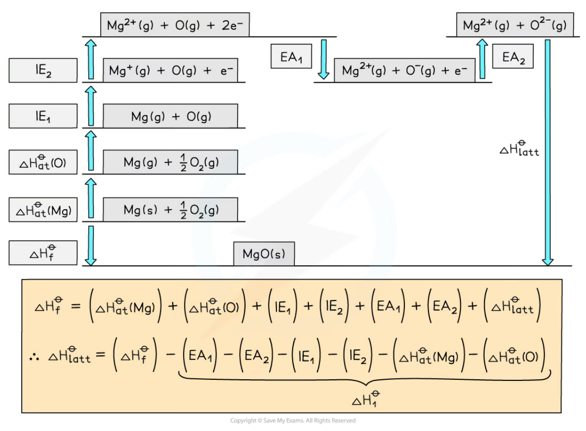
Calculations using Born–Haber cycles（Born–Haber 循环计算）
根据 Hess’s Law，直接路径（formation）与间接路径（各分步焓变之和）相等：
\[\Delta H^\ominus_{\mathrm{f}} = \Delta H^\ominus_{\mathrm{at}} + \sum IE + \sum EA + \Delta H^\ominus_{\mathrm{latt}}\]
整理得：
\[\Delta H^\ominus_{\mathrm{latt}} = \Delta H^\ominus_{\mathrm{f}} - \Delta H^\ominus_{g \rightarrow \text{ions}}\]
其中 \(\Delta H^\ominus_{g \rightarrow \text{ions}}\) 是所有把标准态元素变为气态离子的焓变之和（原子化 + 电离能 + 电子亲和能）。计算时务必按化学式的计量数乘以对应数值，例如 MgCl₂ 中有 2 mol 氯原子，氯的电子亲和能要乘 2。
以 KCl 为例：
\[\Delta H^\ominus_{\mathrm{latt}}(KCl) = (-437) - [(+90) + (+122) + (+418) + (-349)] = -718\ \mathrm{kJ\,mol^{-1}}\]
括号能避免漏掉正负号，这是考试中最常见的失分点。
Worked example · 笔记例题
用数据计算 KCl 的晶格能
用下面的数据计算氯化钾的晶格能 \(\Delta H^\ominus_{\mathrm{latt}}(KCl)\)：
| \(\Delta H^\ominus_{\mathrm{at}}\) / \(\mathrm{kJ\,mol^{-1}}\) | \(IE_1\) / \(\mathrm{kJ\,mol^{-1}}\) | \(EA_1\) / \(\mathrm{kJ\,mol^{-1}}\) | \(\Delta H^\ominus_f\) / \(\mathrm{kJ\,mol^{-1}}\) | |
|---|---|---|---|---|
| K | +90 | +418 | — | — |
| Cl | +122 | — | −349 | — |
| KCl | — | — | — | −437 |
Answer:
\[\Delta H^\ominus_{\mathrm{latt}}(KCl) = \Delta H^\ominus_f - [\Delta H^\ominus_{at}(K) + \Delta H^\ominus_{at}(Cl) + IE_1(K) + EA_1(Cl)]\]
\[\Delta H^\ominus_{\mathrm{latt}}(KCl) = (-437) - [(+90) + (+122) + (+418) + (-349)] = -718\ \mathrm{kJ\,mol^{-1}}\]
Worked example · 笔记例题
用数据计算 MgO 的晶格能
用下面的数据计算氧化镁的晶格能 \(\Delta H^\ominus_{\mathrm{latt}}(MgO)\)：
| \(\Delta H^\ominus_{\mathrm{at}}\) / \(\mathrm{kJ\,mol^{-1}}\) | \(IE_1\) / \(IE_2\) / \(\mathrm{kJ\,mol^{-1}}\) | \(EA_1\) / \(EA_2\) / \(\mathrm{kJ\,mol^{-1}}\) | \(\Delta H^\ominus_f\) / \(\mathrm{kJ\,mol^{-1}}\) | |
|---|---|---|---|---|
| Mg | +148 | +736 / +1450 | — | — |
| O | +248 | — | −142 / +770 | — |
| MgO | — | — | — | −602 |
Answer:
\[\Delta H^\ominus_{\mathrm{latt}}(MgO) = \Delta H^\ominus_f - [\Delta H^\ominus_{at}(Mg) + \Delta H^\ominus_{at}(O) + IE_1(Mg) + IE_2(Mg) + EA_1(O) + EA_2(O)]\]
\[\Delta H^\ominus_{\mathrm{latt}}(MgO) = (-602) - [(+148) + (+248) + (+736) + (+1450) + (-142) + (+770)] = -3812\ \mathrm{kJ\,mol^{-1}}\]
影响晶格能的因素：离子电荷与离子半径
- Ionic radius（离子半径）：离子半径越大，晶格能越不活泼（less exothermic）。大离子电荷分布更分散，且离子中心间距更大，正负离子间静电吸引更弱；
- Ionic charge（离子电荷）：离子电荷越高，charge density 越大，静电吸引越强，晶格能越活泼（more exothermic）。
例如 CsF 的晶格能（−730 kJ mol⁻¹）比 KF（−830 kJ mol⁻¹）不活泼，因为 Cs⁺ 比 K⁺ 大、与 F⁻ 的距离更远；而 CaO（2+ / 2− 离子）比 KCl（1+ / 1−）活泼得多。
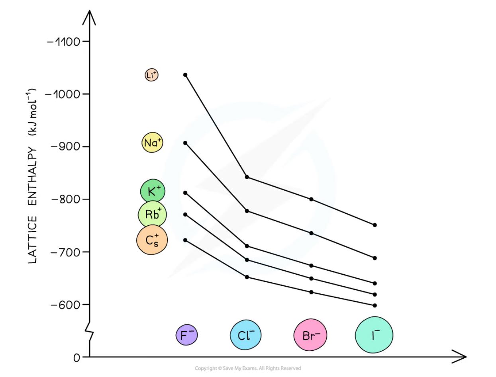
23.2 Enthalpies of solution and hydration
Enthalpy change of solution（溶解焓变）
The standard enthalpy change of solution, \(\Delta H^\ominus_{\mathrm{sol}}\), is the enthalpy change when 1 mole of an ionic substance dissolves in sufficient water to form a very dilute solution.
\[\mathrm{KCl(s) + aq \rightarrow K^+(aq) + Cl^-(aq)}\]
\(\Delta H^\ominus_{\mathrm{sol}}\) 可正可负（放热或吸热溶解）。
Enthalpy change of hydration（水合焓变）
The standard enthalpy change of hydration, \(\Delta H^\ominus_{\mathrm{hyd}}\), is the enthalpy change when 1 mole of a specified gaseous ion dissolves in sufficient water to form a very dilute solution.
\[\mathrm{Mg^{2+}(g) + aq \rightarrow Mg^{2+}(aq)}\]
水是极性分子，氧端带 \(\delta^-\)、氢端带 \(\delta^+\)。正离子吸引水中带 \(\delta^-\) 的氧，负离子吸引带 \(\delta^+\) 的氢，形成 ion–dipole attractions。水合焓总是放热（exothermic、为负值）。
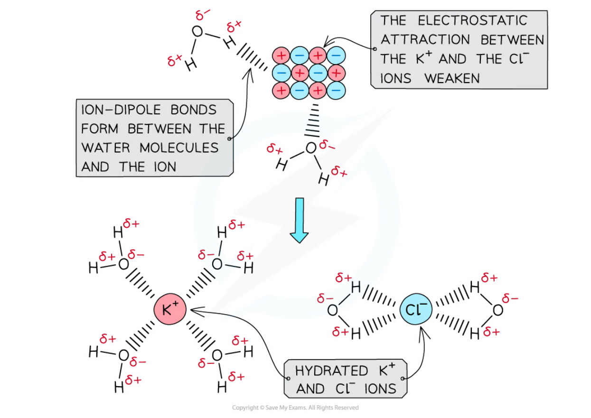
溶解焓与水合焓的能量循环
离子晶体溶于水可以走两条路径：
- 直接路径：\(\mathrm{ionic\ lattice \rightarrow hydrated\ ions}\)，即 \(\Delta H^\ominus_{\mathrm{sol}}\)；
- 间接路径：先破坏晶格（lattice dissociation，\(-\Delta H^\ominus_{\mathrm{latt}}\)，吸热），再让气态离子水合（hydration，\(\Delta H^\ominus_{\mathrm{hyd}}\)，放热）。
由 Hess’s Law：
\[\Delta H^\ominus_{\mathrm{sol}} = -\Delta H^\ominus_{\mathrm{latt}} + \Sigma\, \Delta H^\ominus_{\mathrm{hyd}}\]
注意：总水合焓要把每种离子的水合焓加起来，并乘以化学式中的离子个数。例如 MgCl₂ 中有 2 mol Cl⁻，氯离子水合焓要乘 2。
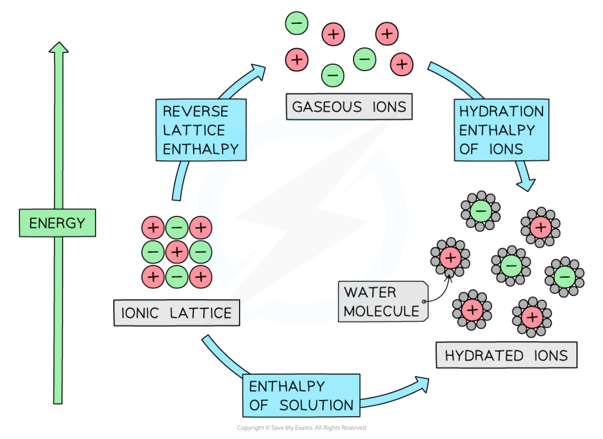
Worked example · 笔记例题
用能量循环求 KCl 中氯离子的水合焓
构造能量循环与能量水平图，计算氯化钾中 \(\mathrm{Cl^-}\) 离子的 \(\Delta H^\ominus_{\mathrm{hyd}}\)。
已知：\(\Delta H^\ominus_{\mathrm{latt}}(KCl) = -711\ \mathrm{kJ\,mol^{-1}}\)，\(\Delta H^\ominus_{\mathrm{sol}}(KCl) = +26\ \mathrm{kJ\,mol^{-1}}\)，\(\Delta H^\ominus_{\mathrm{hyd}}(K^+) = -322\ \mathrm{kJ\,mol^{-1}}\)。
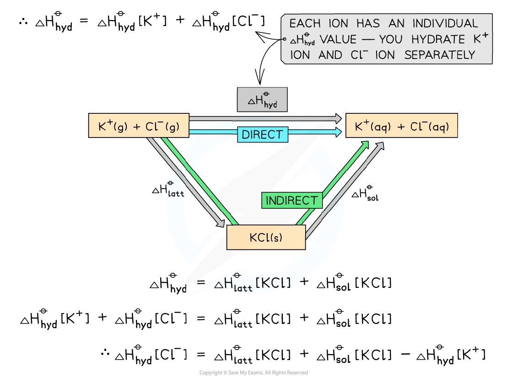
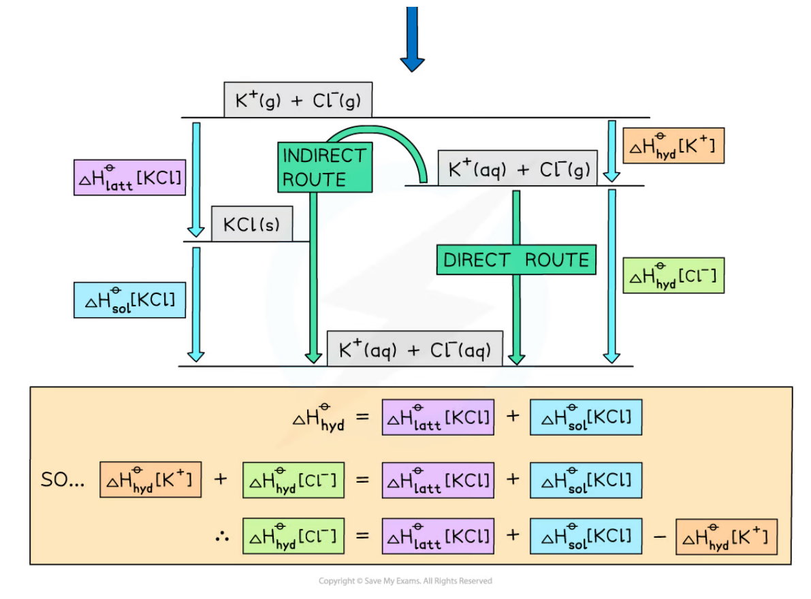
Answer:
\[\Delta H^\ominus_{\mathrm{hyd}}(Cl^-) = \Delta H^\ominus_{\mathrm{sol}} + \Delta H^\ominus_{\mathrm{latt}} - \Delta H^\ominus_{\mathrm{hyd}}(K^+)\]
\[\Delta H^\ominus_{\mathrm{hyd}}(Cl^-) = (+26) + (-711) - (-322) = -363\ \mathrm{kJ\,mol^{-1}}\]
Worked example · 笔记例题
用能量循环求 MgCl₂ 中镁离子的水合焓
构造能量循环与能量水平图，计算 \(\mathrm{MgCl_2}\) 中 \(\mathrm{Mg^{2+}}\) 离子的 \(\Delta H^\ominus_{\mathrm{hyd}}\)。
已知：\(\Delta H^\ominus_{\mathrm{latt}}(MgCl_2) = -2592\ \mathrm{kJ\,mol^{-1}}\)，\(\Delta H^\ominus_{\mathrm{sol}}(MgCl_2) = -55\ \mathrm{kJ\,mol^{-1}}\)，\(\Delta H^\ominus_{\mathrm{hyd}}(Cl^-) = -363\ \mathrm{kJ\,mol^{-1}}\)。
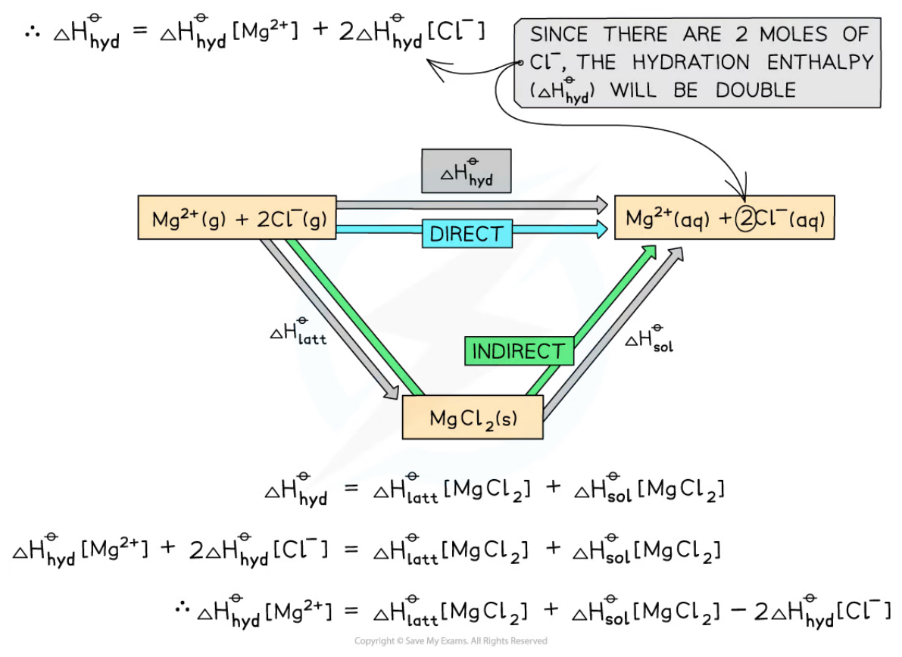
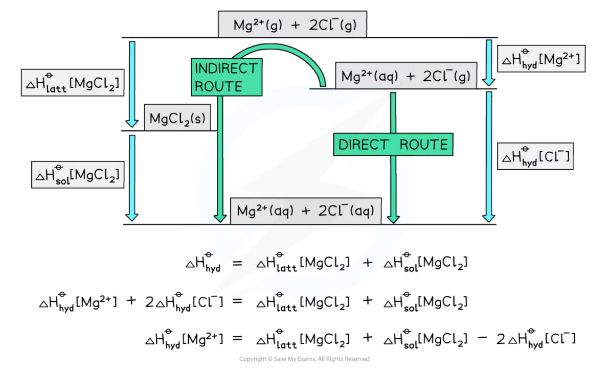
Answer:
\[\Delta H^\ominus_{\mathrm{hyd}}(Mg^{2+}) = \Delta H^\ominus_{\mathrm{sol}} + \Delta H^\ominus_{\mathrm{latt}} - 2 \times \Delta H^\ominus_{\mathrm{hyd}}(Cl^-)\]
\[\Delta H^\ominus_{\mathrm{hyd}}(Mg^{2+}) = (-55) + (-2592) - 2 \times (-363) = -1921\ \mathrm{kJ\,mol^{-1}}\]
影响水合焓的因素
- Ionic radius：离子越小，charge density 越大，与水分子之间的 ion–dipole 吸引越强，水合焓越活泼（more exothermic）；
- Ionic charge：离子电荷越高，水合焓越活泼。
例如 Mg²⁺ 比 Ca²⁺ 小，Mg²⁺ 的水合焓更活泼；MgSO₄ 比 BaSO₄ 的水合焓更活泼（SO₄²⁻ 相同，Mg²⁺ 更小）。
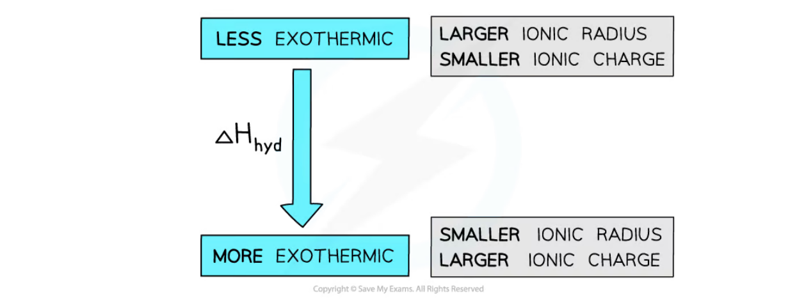
23.3 Entropy change
Entropy（熵）
Entropy, \(S\), is the number of possible arrangements of the particles and their energy in a given system — in other words, a measure of how disordered a system is.
系统越无序，熵越大；系统越无序，能量上越稳定。不同状态的熵大小顺序为：
\[\mathrm{gas > liquid > solid}\]
典型规律：
- 熔化（solid → liquid）与沸腾（liquid → gas）：熵增加；
- 凝固与冷凝：熵减少；
- 固体溶解成稀溶液：熵增加（粒子更分散、排列能量方式更多）；
- 从溶液中结晶析出：熵减少；
- 反应中气体分子数增加：熵增加；气体分子数减少：熵减少。例如 \(\mathrm{N_2(g)+3H_2(g)\rightleftharpoons 2NH_3(g)}\)，4 mol 气体变成 2 mol 气体，熵减少。
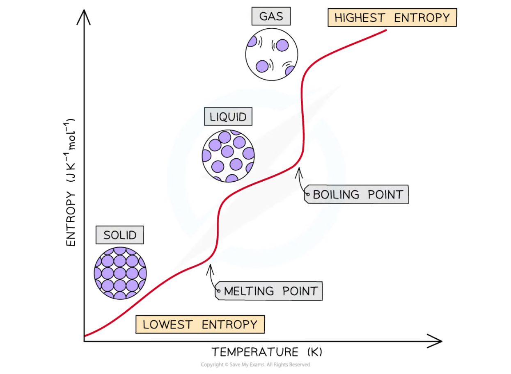
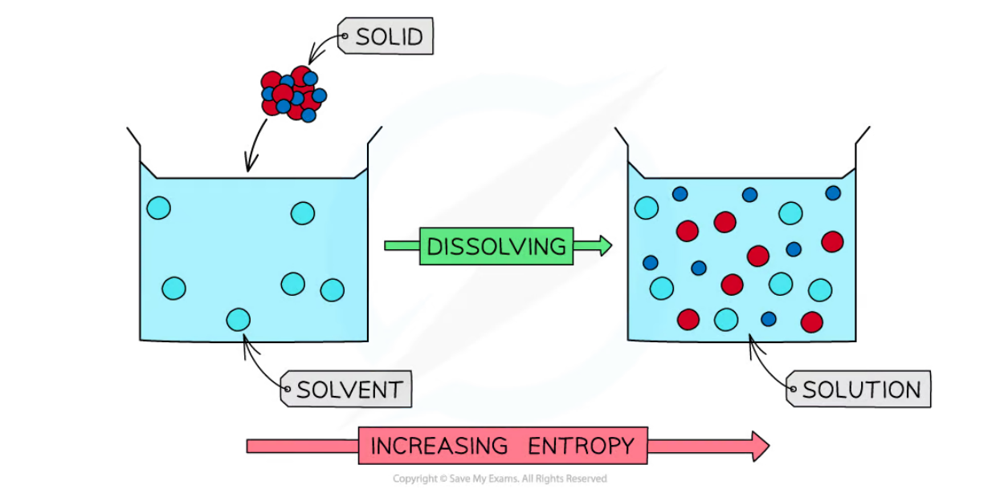
标准熵变计算
\[\Delta S^\ominus_{\mathrm{system}} = \Sigma\, S^\ominus_{\mathrm{products}} - \Sigma\, S^\ominus_{\mathrm{reactants}}\]
计算时按方程式计量数乘以对应物质的 \(S^\ominus\)，并注意物质的状态。
Worked example · 笔记例题
计算反应的熵变
计算 \(\mathrm{2Mg(s) + O_2(g) \rightarrow 2MgO(s)}\) 的熵变：
\(S^\ominus[\mathrm{Mg(s)}] = 32.60\ \mathrm{J\,K^{-1}\,mol^{-1}}\)，\(S^\ominus[\mathrm{O_2(g)}] = 205.0\ \mathrm{J\,K^{-1}\,mol^{-1}}\)，\(S^\ominus[\mathrm{MgO(s)}] = 38.20\ \mathrm{J\,K^{-1}\,mol^{-1}}\)。
Answer:
\[\Delta S^\ominus_{\mathrm{system}} = \Sigma\, S^\ominus_{products} - \Sigma\, S^\ominus_{reactants}\]
\[\Delta S^\ominus_{\mathrm{system}} = (2 \times 38.20) - (2 \times 32.60 + 205.0) = -193.8\ \mathrm{J\,K^{-1}\,mol^{-1}}\]
反应中 3 mol 气体变成 2 mol 固体，气体分子数减少，所以熵变是负的。
23.4 Gibbs free energy change
The Gibbs equation（Gibbs 方程）
\[\Delta G^\ominus = \Delta H^\ominus_{\mathrm{reaction}} - T\Delta S^\ominus_{\mathrm{system}}\]
单位：\(\Delta G^\ominus\) 与 \(\Delta H^\ominus\) 用 \(\mathrm{kJ\,mol^{-1}}\)，\(T\) 用 K，\(\Delta S^\ominus\) 用 \(\mathrm{J\,K^{-1}\,mol^{-1}}\)。代入前必须把 \(\Delta S^\ominus\) 除以 1000 换成 \(\mathrm{kJ\,K^{-1}\,mol^{-1}}\)，这是最常见的失分点。
Worked example · 笔记例题
计算碳酸氢钠分解的 \(\Delta G^\ominus\)
\[\mathrm{2NaHCO_3(s) \rightarrow Na_2CO_3(s) + H_2O(l) + CO_2(g)}\]
已知 \(\Delta H^\ominus = +135\ \mathrm{kJ\,mol^{-1}}\)，\(\Delta S^\ominus = +344\ \mathrm{J\,K^{-1}\,mol^{-1}}\)，计算 298 K 下的 \(\Delta G^\ominus\)。
Answer:
先把熵变换成 \(\mathrm{kJ}\)：\(\Delta S^\ominus = 344/1000 = +0.344\ \mathrm{kJ\,K^{-1}\,mol^{-1}}\)；
\[\Delta G^\ominus = \Delta H^\ominus - T\Delta S^\ominus = +135 - (298 \times 0.344) = +32.49\ \mathrm{kJ\,mol^{-1}}\]
Worked example · 笔记例题
计算甲醇与 HBr 反应的 \(\Delta G^\ominus\)
\[\mathrm{CH_3OH(l) + HBr(g) \rightarrow CH_3Br(g) + H_2O(l)}\]
\(S^\ominus[\mathrm{CH_3OH(l)}] = +240\ \mathrm{J\,K^{-1}\,mol^{-1}}\)，\(S^\ominus[\mathrm{HBr(g)}] = +99.0\ \mathrm{J\,K^{-1}\,mol^{-1}}\)，\(S^\ominus[\mathrm{H_2O(l)}] = +70.0\ \mathrm{J\,K^{-1}\,mol^{-1}}\)，\(S^\ominus[\mathrm{CH_3Br(g)}] = +246\ \mathrm{J\,K^{-1}\,mol^{-1}}\)，\(\Delta H^\ominus = -47\ \mathrm{kJ\,mol^{-1}}\)。
Answer:
\[\Delta S^\ominus_{\mathrm{system}} = (246 + 70.0) - (240 + 99.0) = -23.0\ \mathrm{J\,K^{-1}\,mol^{-1}}\]
\[\Delta G^\ominus = (-47) - 298 \times (-0.023) = -40.1\ \mathrm{kJ\,mol^{-1}}\]
Reaction feasibility（反应可行性）
When \(\Delta G^\ominus\) is negative, the reaction is feasible and likely to occur; when \(\Delta G^\ominus\) is positive, the reaction is not feasible and unlikely to occur.
仅看熵变不足以判断可行性，必须同时考虑焓变，Gibbs 方程把两者合在一起。
温度对可行性的影响由 \(\Delta H^\ominus\) 与 \(\Delta S^\ominus\) 的符号决定，共四种情况：
| \(\Delta H^\ominus\) | \(\Delta S^\ominus\) | \(\Delta G^\ominus\) | 可行性 |
|---|---|---|---|
| negative（放热） | positive（更无序） | 任何温度都为负 | 任何温度都可行 |
| negative（放热） | negative（更有序） | 低温为负、高温为正 | 只在低温可行 |
| positive（吸热） | negative（更有序） | 任何温度都为正 | 任何温度都不可行 |
| positive（吸热） | positive（更无序） | 高温为负、低温为正 | 只在高温可行 |
例如碳酸钙热分解 \(\mathrm{CaCO_3(s)\rightarrow CaO(s)+CO_2(g)}\)，\(\Delta H^\ominus=+178\ \mathrm{kJ\,mol^{-1}}\)、\(\Delta S^\ominus=+160.9\ \mathrm{J\,K^{-1}\,mol^{-1}}\)，两者都为正，所以只有高温才可行——升高温度后 \(T\Delta S\) 超过 \(\Delta H\)，\(\Delta G\) 变为负。
Worked example · 笔记例题
判断 2Ca + O₂ 反应的可行性
\[\mathrm{2Ca(s) + O_2(g) \rightarrow 2CaO(s)} \qquad \Delta H^\ominus = -635.5\ \mathrm{kJ\,mol^{-1}}\]
\(S^\ominus[\mathrm{Ca(s)}] = 41.00\ \mathrm{J\,K^{-1}\,mol^{-1}}\)，\(S^\ominus[\mathrm{O_2(g)}] = 205.0\ \mathrm{J\,K^{-1}\,mol^{-1}}\)，\(S^\ominus[\mathrm{CaO(s)}] = 40.00\ \mathrm{J\,K^{-1}\,mol^{-1}}\)。
Answer:
\[\Delta S^\ominus_{\mathrm{system}} = (2 \times 40.00) - (2 \times 41.00 + 205.0) = -207.0\ \mathrm{J\,K^{-1}\,mol^{-1}}\]
\[\Delta G^\ominus = (-635.5) - 298 \times (-0.207) = -573.8\ \mathrm{kJ\,mol^{-1}}\]
\(\Delta G^\ominus\) 为负，所以该反应可行（feasible），且任何温度下都可行。
Structured Questions
5.1 Chemical Energetics - Easy
Example 1 · Lattice energy and the CaO Born–Haber cycle · 5.1 SQ Easy Q1
This question is about the formation of calcium oxide.
(a) Explain the meaning of the term lattice energy. [3 marks]
(b) The Born–Haber cycle in Fig. 1.1 can be used to determine the lattice enthalpy of calcium oxide. Steps A–G include the values for enthalpy changes.
Complete the Born–Haber cycle by adding the species present on the two dotted lines. Include state symbols.
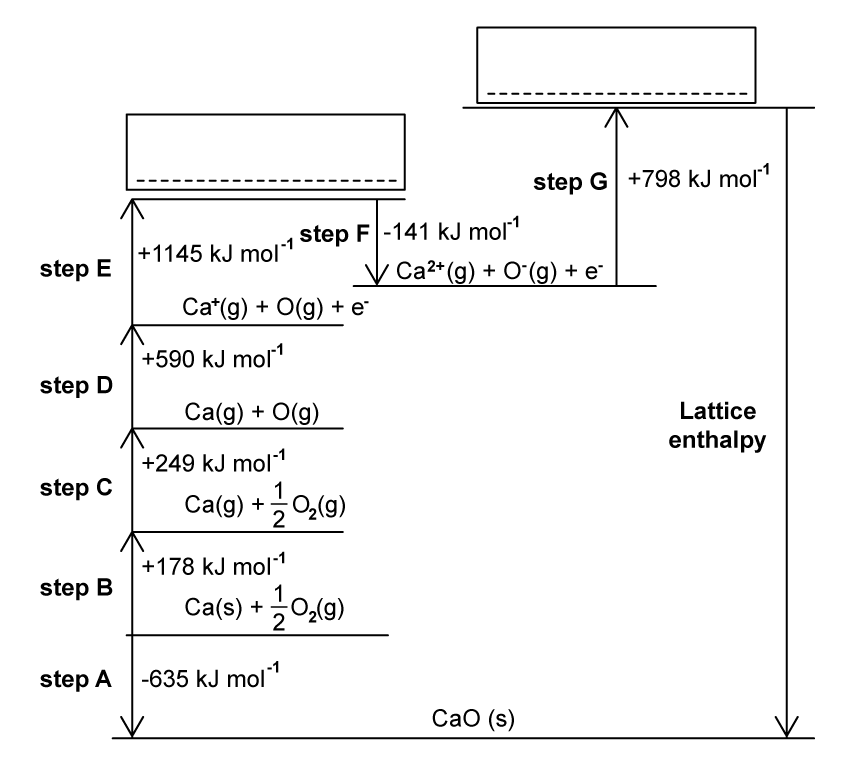
[2 marks]
(c) Name the enthalpy changes for the following steps in the Born–Haber cycle.
- Step B
- Step D
- Step F
[3 marks]
(d) Step C represents the enthalpy change of atomisation of oxygen. Why is the enthalpy change of atomisation always a positive value? [2 marks]
Show mark scheme / model answer
- (a) The formation of 1 mole of an ionic lattice
[1]from gaseous ions[1]under standard conditions.[1] - (b) Step E: \(\mathrm{Ca^{2+}(g) + O(g) + 2e^-}\)
[1]; Step G: \(\mathrm{Ca^{2+}(g) + O^{2-}(g)}\).[1] - (c) Step B: enthalpy of atomisation (of calcium)
[1]; Step D: first ionisation energy of calcium[1]; Step F: first electron affinity of oxygen.[1] - (d) Energy is taken in to break the bonds
[1]; (so) the process is endothermic.[1]
Example 2 · Potassium fluoride cycle and enthalpy of solution · 5.1 SQ Easy Q2
This question is about lattice enthalpy.
(a) Write one equation to represent the following changes:
- atomisation of sodium;
- second ionisation energy of magnesium;
- first electron affinity of chlorine.
[3 marks]
(b) The Born–Haber cycle for the formation of potassium fluoride is shown in Fig. 2.1.
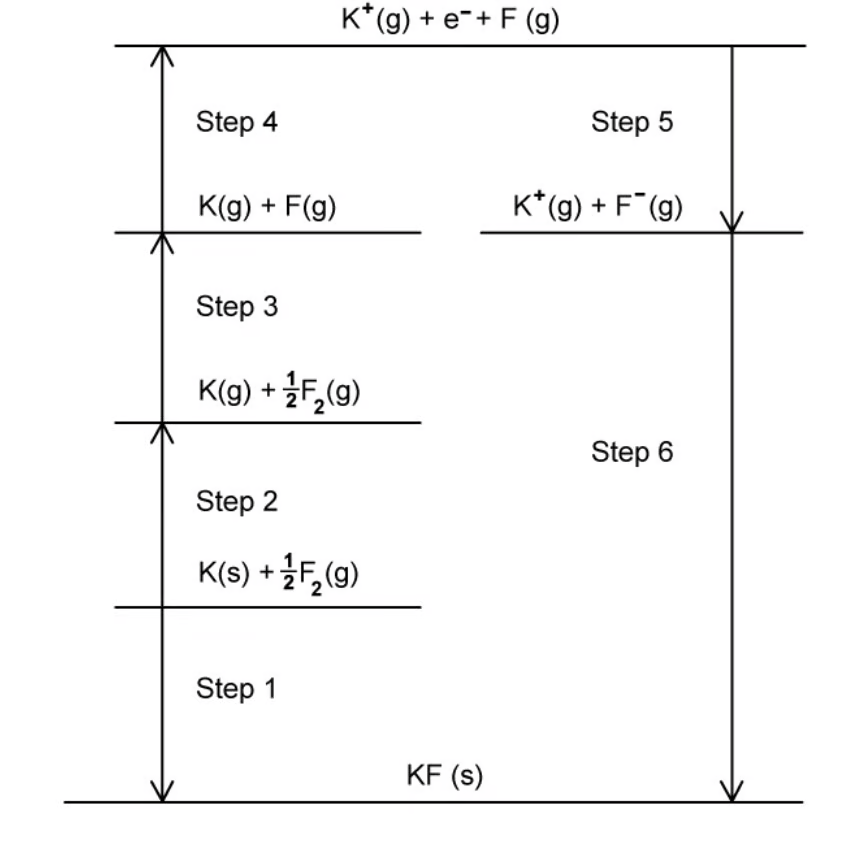
Complete Table 2.1 by naming the enthalpy changes associated with the identified steps.
| Step | Name of the enthalpy change |
|---|---|
| 1 | |
| 2 | Atomisation of potassium |
| 3 | |
| 4 | First ionisation energy of potassium |
| 5 | |
| 6 | Lattice enthalpy of formation |
[3 marks]
(c) The enthalpies of lattice formation for potassium fluoride and caesium fluoride are \(-830\ \mathrm{kJ\,mol^{-1}}\) and \(-730\ \mathrm{kJ\,mol^{-1}}\) respectively.
Explain why the enthalpy of lattice formation is more exothermic for potassium fluoride. [3 marks]
(d) Use the data in Table 2.2 to calculate the enthalpy of solution of potassium fluoride.
| Enthalpy change | Enthalpy change / \(\mathrm{kJ\,mol^{-1}}\) |
|---|---|
| \(\Delta H^\ominus_{\mathrm{latt}}\) KF | −830 |
| \(\Delta H^\ominus_{\mathrm{hyd}}\) K⁺ | −351 |
| \(\Delta H^\ominus_{\mathrm{hyd}}\) F⁻ | −504 |
| \(\Delta H^\ominus_{\mathrm{sol}}\) KF | \(x\) |
[3 marks]
Show mark scheme / model answer
- (a) \(\mathrm{Na(s) \rightarrow Na(g)}\)
[1]; \(\mathrm{Mg^{+}(g) \rightarrow Mg^{2+}(g) + e^-}\)[1]; \(\mathrm{Cl(g) + e^- \rightarrow Cl^{-}(g)}\).[1] - (b) Step 1: enthalpy change of formation
[1]; Step 3: atomisation of fluorine[1]; Step 5: first electron affinity of fluorine.[1] - (c) The potassium ion is smaller than the caesium ion / K⁺ has fewer electron shells
[1]; the distance between the potassium ion and fluoride ion is shorter[1]; so the K–F bonding is stronger.[1] - (d) \(\Delta H^\ominus_{\mathrm{sol}} = \Delta H^\ominus_{\mathrm{hyd}}(K^+) + \Delta H^\ominus_{\mathrm{hyd}}(F^-) - \Delta H^\ominus_{\mathrm{latt}}\)
[1]\(= (-351) + (-504) - (-830)\)[1]\(= -25\ \mathrm{kJ\,mol^{-1}}\).[1]
Example 3 · NaCl lattice enthalpy, electron affinity and the arrows for oxygen · 5.1 SQ Easy Q3
This question is about enthalpy changes and calculations.
(a) Table 3.1 shows the enthalpy data for the formation of sodium chloride.
| Enthalpy change | Equation | Enthalpy change / \(\mathrm{kJ\,mol^{-1}}\) |
|---|---|---|
| \(\Delta H^\ominus_{\mathrm{f}}\) NaCl | \(\mathrm{Na(s) + \tfrac{1}{2}Cl_2(g) \rightarrow NaCl(s)}\) | −411 |
| \(\Delta H^\ominus_{\mathrm{at}}\) Cl | \(\mathrm{\tfrac{1}{2}Cl_2(g) \rightarrow Cl(g)}\) | +121 |
| \(\Delta H^\ominus_{\mathrm{at}}\) Na | \(\mathrm{Na(s) \rightarrow Na(g)}\) | +108 |
| \(E_{ea}\) Cl | \(\mathrm{Cl(g) \rightarrow Cl^{-}(g)}\) | −349 |
| \(\Delta H^\ominus_{ie}\) Na | \(\mathrm{Na(g) \rightarrow Na^{+}(g)}\) | +496 |
| \(\Delta H^\ominus_{\mathrm{latt}}\) NaCl | \(\mathrm{Na^{+}(g) + Cl^{-}(g) \rightarrow NaCl(s)}\) | to be calculated |
Calculate the enthalpy of lattice formation of sodium chloride. [3 marks]
(b) State the definition of electron affinity. [3 marks]
(c) A section of the Born–Haber cycle for the formation of magnesium oxide is shown in Fig. 3.1.
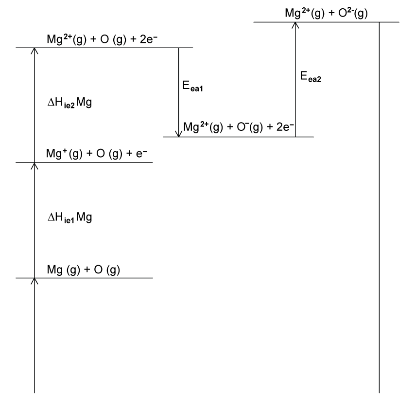
The first electron affinity of oxygen has a negative value so the arrow points downwards. The second electron affinity of oxygen has a positive value so the arrow points upwards.
Explain why the arrows point in different directions. [3 marks]
Show mark scheme / model answer
- (a) \(\Delta H^\ominus_{\mathrm{latt}}(NaCl) = \Delta H^\ominus_{\mathrm{f}} - [\Delta H^\ominus_{\mathrm{at}}(Na) + \Delta H^\ominus_{\mathrm{at}}(Cl) + \Delta H^\ominus_{ie}(Na) + E_{ea}(Cl)]\)
[1]\(= -411 - (108 + 121 + 496 - 349)\)[1]\(= -787\ \mathrm{kJ\,mol^{-1}}\).[1] - (b) The electron affinity of an element is the energy change when 1 mole of electrons is gained
[1]by 1 mole of gaseous atoms to form 1 mole of gaseous 1− ions[1]under standard conditions.[1] - (c) The first electron affinity of oxygen is exothermic
[1]; the second electron affinity of oxygen is endothermic[1]; because the repulsion between the incoming electron and the negative ion must be overcome.[1]
5.1 Chemical Energetics - Medium
Example 4 · Lattice energy of potassium oxide · 5.1 SQ Medium Q1
Lattice energies are always negative showing that they represent exothermic changes.
(a)
(i) Explain what is meant by lattice energy. [2]
(ii) Explain why lattice energy is an exothermic process. [1]
[3 marks]
(b)
(i) Use relevant data from Table 5.1 to calculate the lattice energy, \(\Delta H^\ominus_{\mathrm{latt}}\), of potassium oxide, \(\mathrm{K_2O(s)}\). Show your working.
| Energy change | Value / \(\mathrm{kJ\,mol^{-1}}\) |
|---|---|
| Standard enthalpy change of atomisation of potassium | +89 |
| Electron affinity of \(\mathrm{O(g)}\) | −141 |
| Electron affinity of \(\mathrm{O^-(g)}\) | +798 |
| Standard enthalpy change of formation of potassium oxide | −361 |
| First ionisation energy of potassium | +418 |
| Second ionisation energy of potassium | +3070 |
| First ionisation energy of oxygen | +1310 |
| Second ionisation energy of oxygen | +3390 |
| O=O bond energy (diatomic molecule) | +496 |
| O–O bond energy (polyatomic molecule) | +150 |
\(\Delta H^\ominus_{\mathrm{latt}}\) of \(\mathrm{K_2O(s)} = \underline{\hspace{6em}}\ \mathrm{kJ\,mol^{-1}}\) [3]
(ii) State how \(\Delta H^\ominus_{\mathrm{latt}}\) \(\mathrm{Na_2O(s)}\) differs from \(\Delta H^\ominus_{\mathrm{latt}}\) \(\mathrm{K_2O(s)}\). Indicate this by placing one tick (✓) in the appropriate box in Table 5.2. Explain your answer.
| \(\Delta H^\ominus_{\mathrm{latt}}\) \(\mathrm{Na_2O(s)}\) is less negative than \(\Delta H^\ominus_{\mathrm{latt}}\) \(\mathrm{K_2O(s)}\) | \(\Delta H^\ominus_{\mathrm{latt}}\) \(\mathrm{Na_2O(s)}\) is the same as \(\Delta H^\ominus_{\mathrm{latt}}\) \(\mathrm{K_2O(s)}\) | \(\Delta H^\ominus_{\mathrm{latt}}\) \(\mathrm{Na_2O(s)}\) is more negative than \(\Delta H^\ominus_{\mathrm{latt}}\) \(\mathrm{K_2O(s)}\) |
|---|---|---|
[4 marks]
Show mark scheme / model answer
- (a)(i) (The energy change) when 1 mole of an ionic compound is formed
[1]from gaseous ions (under standard conditions).[1] - (a)(ii) Forming an ionic bond
[1]releases a large amount of energy. - (b)(i) \(\Delta H^\ominus_{\mathrm{latt}} = -361 - [2(+89) + \tfrac{1}{2}(+496) + 2(+418) + (-141) + (+798)]\) — correct data extraction and multipliers
[1]\(= -361 - 1919\)[1]\(= -2280\ \mathrm{kJ\,mol^{-1}}\).[1] - (b)(ii) Tick the third box: \(\Delta H^\ominus_{\mathrm{latt}}\) \(\mathrm{Na_2O(s)}\) is more negative
[1]because sodium has a smaller ionic radius[1], so there is greater attraction between the ions.[1]
Example 5 · Lithium fluoride Born–Haber cycle and solution enthalpies · 5.1 SQ Medium Q2
One use of pure crystals of lithium fluoride is in X-ray monochromators.
(a) The Born–Haber cycle for lithium fluoride is shown in Fig. 2.1.
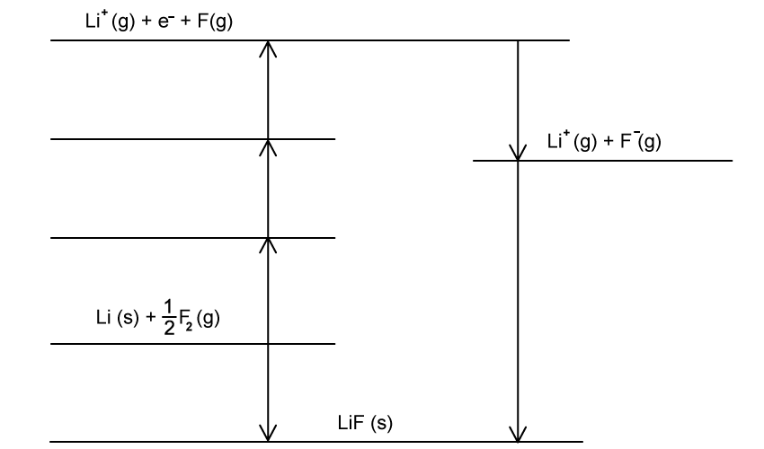
(i) Define the term enthalpy of atomisation. [1]
(ii) Explain why the enthalpy of atomisation of fluorine is positive. [1]
(iii) Complete the Born–Haber cycle for lithium fluoride in Fig. 2.1 by adding the missing species on the lines. [2]
[4 marks]
(b) Use the data in Table 2.1 and your completed Born–Haber cycle from part (a) to answer the questions below.
| Name of enthalpy change | Energy change / \(\mathrm{kJ\,mol^{-1}}\) |
|---|---|
| \(\mathrm{Li(s) \rightarrow Li(g)}\) | +216 |
| \(\mathrm{Li(g) \rightarrow Li^{+}(g) + e^-}\) | +520 |
| \(\mathrm{F_2(g) \rightarrow 2F(g)}\) | +158 |
| \(\mathrm{F(g) + e^- \rightarrow F^{-}(g)}\) | −348 |
| \(\mathrm{Li(s) + \tfrac{1}{2}F_2(g) \rightarrow LiF(s)}\) | −594 |
(i) Calculate the enthalpy of lattice formation of lithium fluoride. [2]
(ii) Explain and justify how the enthalpy of lattice formation of LiBr compares with that of LiF. You must refer to the size of the ions in your answer. [3]
[5 marks]
(c) This question is about enthalpy changes in solution.
(i) Write the equation for the process showing the enthalpy of solution of potassium fluoride. Include state symbols in your answer. [1]
(ii) Use the data in Table 2.2 to calculate the standard enthalpy of solution of potassium fluoride. [2]
| Name of enthalpy change in solution | Enthalpy change / \(\mathrm{kJ\,mol^{-1}}\) |
|---|---|
| Enthalpy of lattice dissociation of potassium fluoride | +829 |
| Enthalpy of hydration of potassium ions | −340 |
| Enthalpy of hydration of fluoride ions | −504 |
[3 marks]
(d) Explain why the value for the enthalpy of hydration, \(\Delta H^\ominus_{\mathrm{hyd}}\), of Group 1 ions increases from lithium to caesium. [2 marks]
Show mark scheme / model answer
- (a)(i) The enthalpy change when one mole of gaseous atoms is formed from its elements under standard conditions.
[1] - (a)(ii) Energy is always required to break any bonds between the atoms in the element.
[1] - (a)(iii) Atomisation of Li: \(\mathrm{Li(g) + \tfrac{1}{2}F_2(g)}\) written on the correct line
[1]; first ionisation of Li: \(\mathrm{Li^{+}(g) + e^- + \tfrac{1}{2}F_2(g)}\) written on the correct line.[1] - (b)(i) \(\Delta H^\ominus_{\mathrm{latt}}(LiF) = -594 - [216 + 79 + 520 + (-348)]\) (79 = half of +158, one mole of F atoms)
[1]\(= -1061\ \mathrm{kJ\,mol^{-1}}\).[1] - (b)(ii) LiBr enthalpy of lattice formation is less negative / less exothermic
[1]; Br⁻ is bigger (than F⁻) / has more electron shells[1]; so the attraction of bromide ion to lithium ion is weaker.[1] - (c)(i) \(\mathrm{KF(s) \rightarrow K^{+}(aq) + F^{-}(aq)}\).
[1] - (c)(ii) \(\Delta H^\ominus_{\mathrm{sol}} = (+829) + (-340) + (-504)\)
[1]\(= -15\ \mathrm{kJ\,mol^{-1}}\).[1] - (d) Ionic radius increases down the group
[1]; therefore the attraction between the larger ion and the \(\delta^-\) O atoms in the water molecule decreases.[1]
Example 6 · Calcium chloride lattice energy and calcium malonate · 5.1 SQ Medium Q3
Calcium chloride, \(\mathrm{CaCl_2}\), is an important industrial chemical used in refrigeration plants, for de-icing roads and for giving greater strength to concrete.
(a) Use an equation to show what is meant by the lattice energy of calcium chloride. [1 mark]
(b) Explain how the lattice energies of the following salts compare in magnitude with that of calcium chloride:
- calcium fluoride;
- calcium sulfide.
[3 marks]
(c) Use the data in Table 3.1 to calculate the lattice energy of \(\mathrm{CaCl_2}\).
| Enthalpy change | Enthalpy change / \(\mathrm{kJ\,mol^{-1}}\) |
|---|---|
| Standard enthalpy change of formation | −796 |
| Standard enthalpy change of atomisation of \(\mathrm{Ca(s)}\) | +178 |
| Electron affinity per mole of chlorine atoms | −349 |
| First ionisation energy of Ca | +590 |
| Second ionisation energy of Ca | +1150 |
| Standard enthalpy change of atomisation of \(\mathrm{Cl_2(g)}\) | +244 |
[3 marks]
(d) When a solution of \(\mathrm{CaCl_2}\) is added to a solution of the dicarboxylic acid, malonic acid, the salt calcium malonate is precipitated as a white solid. The solid has the following composition by mass: Ca, 28.2%; C, 25.2%; H, 1.4%; O, 45.2%.
(i) Calculate the empirical formula of calcium malonate. [2]
(ii) Suggest the structural formula of malonic acid. [1]
[3 marks]
Show mark scheme / model answer
- (a) \(\mathrm{Ca^{2+}(g) + 2Cl^{-}(g) \rightarrow CaCl_2(s)}\).
[1] - (b) Both have larger (more exothermic) lattice enthalpies than \(\mathrm{CaCl_2}\)
[1]; F⁻ is smaller than Cl⁻[1]; S²⁻ is more highly charged than Cl⁻.[1] - (c) Lattice energy \(= -796 - (178 + 244 + 590 + 1150 + 2 \times (-349))\)
[1]\(= -2260\ \mathrm{kJ\,mol^{-1}}\)[1]; the answer must be negative.[1] - (d)(i) Moles: Ca \(28.2/40.1 = 0.703\); C \(25.2/12.0 = 2.10\); H \(1.4/1.0 = 1.4\); O \(45.2/16.0 = 2.83\); divide by 0.703 gives the ratio CaC₃H₂O₄
[2]. - (d)(ii) \(\mathrm{CH_2(CO_2H)_2}\).
[1]
Example 7 · Hydration enthalpy and the experimental determination of \(\Delta H_{\mathrm{sol}}\) · 5.1 SQ Medium Q4
This question is about enthalpy change of hydration.
(a) Explain what is meant by the term enthalpy change of hydration, \(\Delta H^\ominus_{\mathrm{hyd}}\). [1 mark]
(b)
(i) Write an equation that represents the \(\Delta H^\ominus_{\mathrm{hyd}}\) of the \(\mathrm{Mg^{2+}}\) ions. [1]
(ii) Suggest a reason why the \(\Delta H^\ominus_{\mathrm{hyd}}\) of the \(\mathrm{Mg^{2+}}\) ion is greater than \(\Delta H^\ominus_{\mathrm{hyd}}\) of the \(\mathrm{Ca^{2+}}\) ion. [1]
[2 marks]
(c) The enthalpy change of solution for \(\mathrm{MgCl_2}\), (\(\mathrm{MgCl_2(s)}\)), is represented by the following equation:
\[\mathrm{MgCl_2(s) + aq \rightarrow Mg^{2+}(aq) + 2Cl^{-}(aq)}\]
Describe the simple apparatus you could use, and the measurements you would make, in order to determine a value for \(\Delta H^\ominus_{\mathrm{sol}}(\mathrm{MgCl_2(s)})\) in the laboratory. [4 marks]
(d) Use the data in Table 4.1 to calculate the value for the enthalpy change of solution for magnesium chloride.
| Enthalpy change | Enthalpy change / \(\mathrm{kJ\,mol^{-1}}\) |
|---|---|
| \(\Delta H^\ominus_{\mathrm{latt}}\) \(\mathrm{MgCl_2(s)}\) | −2526 |
| \(\Delta H^\ominus_{\mathrm{hyd}}(\mathrm{Mg^{2+}(g)})\) | −1890 |
| \(\Delta H^\ominus_{\mathrm{hyd}}(\mathrm{Cl^{-}(g)})\) | −398 |
[3 marks]
Show mark scheme / model answer
- (a) The enthalpy change when 1 mole of gaseous ions dissolves in water.
[1] - (b)(i) \(\mathrm{Mg^{2+}(g) + aq \rightarrow Mg^{2+}(aq)}\) (or \(\mathrm{Mg^{2+}(g) + 6H_2O \rightarrow [Mg(H_2O)_6]^{2+}}\)).
[1] - (b)(ii) \(\mathrm{Mg^{2+}}\) has a smaller radius / size compared to \(\mathrm{Ca^{2+}}\), or a greater charge density.
[1] - (c) Measure a known volume / mass of water into a calorimeter
[1]; take the temperature of the water[1]; weigh out a known mass of \(\mathrm{MgCl_2}\)[1]; take the final / highest temperature, or record the temperature change.[1] - (d) \(\Delta H^\ominus_{\mathrm{sol}} = \Delta H^\ominus_{\mathrm{hyd}}(Mg^{2+}) + 2 \times \Delta H^\ominus_{\mathrm{hyd}}(Cl^-) - \Delta H^\ominus_{\mathrm{latt}}\)
[1]\(= (-1890) + 2 \times (-398) - (-2526)\)[1]\(= -160\ \mathrm{kJ\,mol^{-1}}\).[1]
Example 8 · Electron affinity and the electron affinity of fluorine · 5.1 SQ Medium Q5
Magnesium reacts with fluorine to form magnesium fluoride.
(a) Explain what is meant by the term first electron affinity. [2 marks]
(b)
(i) Write an equation for the second electron affinity of fluorine. [1]
(ii) Suggest why the second electron affinity for fluorine is endothermic. [1]
[2 marks]
(c) Determine the electron affinity of a fluorine atom, \(\Delta H^\ominus_{ea}\), using Table 5.1.
| Name of enthalpy change | Energy change / \(\mathrm{kJ\,mol^{-1}}\) |
|---|---|
| Enthalpy of atomisation of magnesium | +150 |
| Second ionisation energy of magnesium | +1450 |
| Enthalpy of formation of magnesium fluoride | −642 |
| Lattice enthalpy of formation of magnesium fluoride | −2493 |
[3 marks]
(d) Explain the trend in the first electron affinities going from fluorine to iodine. [3 marks]
Show mark scheme / model answer
- (a) The enthalpy change when 1 mole of electrons is added
[1]to 1 mole of gaseous atoms to form 1 mole of gaseous ions with a single negative charge, under standard conditions.[1] - (b)(i) \(\mathrm{F^{-}(g) + e^- \rightarrow F^{2-}(g)}\).
[1] - (b)(ii) Energy is needed to add electrons to the already negative ion / to overcome repulsion.
[1] - (c) \(2\Delta H^\ominus_{ea}(F) = \Delta H^\ominus_f(MgF_2) - \Delta H^\ominus_{at}(Mg) - \Delta H^\ominus_{ie1}(Mg) - \Delta H^\ominus_{ie2}(Mg) - 2\Delta H^\ominus_{at}(F) - \Delta H^\ominus_{latt}(MgF_2)\)
[1]\(= -642 - 150 - 738 - 1450 - 159 - (-2493) = -646\)[1], so \(\Delta H^\ominus_{ea}(F) = -323\ \mathrm{kJ\,mol^{-1}}\).[1] - (d) (Electron affinity) decreases
[1]; there is more shielding by inner electrons and the number of shells / ionic radius increases[1]; so there is less attraction between the electron being gained and the positively charged nucleus.[1]
Source check: the printed Table 5.1 in the question paper shows only four rows; the model answer also uses \(\Delta H^\ominus_{ie1}(Mg) = +738\ \mathrm{kJ\,mol^{-1}}\) and atomisation of fluorine \(2\Delta H^\ominus_{at}(F) = +159\ \mathrm{kJ\,mol^{-1}}\), which are missing from the printed table.
5.1 Chemical Energetics - Hard
Example 9 · Drawing the K₂S Born–Haber cycle and calculating lattice enthalpy · 5.1 SQ Hard Q1
Potassium sulfide is a reagent used in analytical chemistry and pharmaceutical preparations.
(a) Draw a fully labelled Born–Haber cycle for the formation of solid potassium sulfide from its elements. Include state symbols for all species involved. [7 marks]
(b) Use the data in Table 1.1 to calculate the lattice enthalpy of potassium sulfide, \(\Delta H^\ominus_{\mathrm{latt}}\). Show your working.
| Enthalpy change | Enthalpy change / \(\mathrm{kJ\,mol^{-1}}\) |
|---|---|
| Formation of potassium sulfide | −381 |
| 1st electron affinity of sulfur | −200 |
| 2nd electron affinity of sulfur | +640 |
| Atomisation of sulfur | +279 |
| 1st ionisation energy of potassium | +419 |
| Atomisation of potassium | +89 |
\(\Delta H^\ominus_{\mathrm{latt}} = \underline{\hspace{6em}}\ \mathrm{kJ\,mol^{-1}}\) [3 marks]
(c) Explain the difference in values between the first and second electron affinities of sulfur. [2 marks]
Show mark scheme / model answer
- (a) The cycle must show, on the correct energy levels:
- \(\Delta H^\ominus_f\) (K₂S) and \(2K(s) + S(s)\)
[1]; - \(\Delta H^\ominus_{at}\) (S) and \(2K(s) + S(g)\)
[1]; - \(2\Delta H^\ominus_{at}\) (K) and \(2K(g) + S(g)\)
[1]; - \(2IE_1\) (K) and \(2K^{+}(g) + S(g) + 2e^-\)
[1]; - \(EA_1\) (S) and \(2K^{+}(g) + S^{-}(g) + e^-\)
[1]; - \(EA_2\) (S) and \(2K^{+}(g) + S^{2-}(g)\)
[1]; - \(\mathrm{K_2S(s)}\) and \(\Delta H^\ominus_{latt}\) (downward arrow).
[1]
- \(\Delta H^\ominus_f\) (K₂S) and \(2K(s) + S(s)\)
- (b) \(\Delta H^\ominus_{latt} = \Delta H^\ominus_f - [\Delta H^\ominus_{at}(S) + 2\Delta H^\ominus_{at}(K) + 2\Delta H^\ominus_{ie}(K) + EA_1(S) + EA_2(S)]\)
[1]\(= -381 - (279 + 178 + 838 - 200 + 640)\)[1]\(= -2116\ \mathrm{kJ\,mol^{-1}}\).[1] - (c) The first electron affinity is exothermic and the second is endothermic
[1]; because there is repulsion between the negative ion and the incoming negative electron.[1]
Example 10 · Magnesium oxide and the second ionisation energy of magnesium · 5.1 SQ Hard Q2
Magnesium oxide is often used in optical applications due to its light-reflecting properties in crystal form.
(a) Write an equation to represent the lattice energy of \(\mathrm{MgO}\). [1 mark]
(b) Use the data in Table 2.1 to calculate a value for the second ionisation energy of magnesium, \(\Delta H^\ominus_{ie2}\). Show your working.
| Enthalpy change | Enthalpy change / \(\mathrm{kJ\,mol^{-1}}\) |
|---|---|
| Lattice energy of \(\mathrm{MgO(s)}\) | −3791 |
| Enthalpy change of atomisation of Mg | +148 |
| Enthalpy of atomisation of oxygen | +248 |
| Electron affinity of the oxygen atom | −141 |
| Electron affinity of the oxygen anion, O⁻ | +798 |
| First ionisation energy of Mg | +736 |
| Enthalpy of formation of MgO | −552 |
Second ionisation energy of Mg \(= \underline{\hspace{6em}}\ \mathrm{kJ\,mol^{-1}}\) [3 marks]
(c) Magnesium oxide is generally insoluble in water whereas calcium oxide is sparingly soluble. Explain why there is no enthalpy of solution data for calcium oxide. [1 mark]
Show mark scheme / model answer
- (a) \(\mathrm{Mg^{2+}(g) + O^{2-}(g) \rightarrow MgO(s)}\).
[1] - (b) \(\Delta H^\ominus_{ie2}(Mg) = \Delta H^\ominus_f(MgO) - [\Delta H^\ominus_{at}(Mg) + \Delta H^\ominus_{ie1}(Mg) + \Delta H^\ominus_{at}(O) + EA_1(O) + EA_2(O) + \Delta H^\ominus_{latt}(MgO)]\)
[1]\(= -552 - (148 + 736 + 248 - 141 + 798 - 3791)\)[1]\(= +1450\ \mathrm{kJ\,mol^{-1}}\).[1] - (c) Calcium oxide reacts with water to produce OH⁻ ions in solution.
[1]
Example 11 · Sodium selenide cycle and the lattice energy of aluminium oxide · 5.1 SQ Hard Q3
(a) The incomplete Born–Haber cycle for sodium selenide is shown in Fig. 3.1.
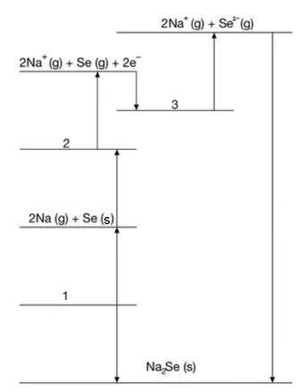
Write the equations for processes 1, 2 and 3. [3 marks]
(b) If sulfur is used as opposed to selenium in the lattice, suggest the change in value of the lattice energy, \(\Delta H^\ominus_{\mathrm{latt}}\). Explain your answer. [3 marks]
(c) Use the data in Table 3.1 to calculate the lattice energy of aluminium oxide, \(\Delta H^\ominus_{\mathrm{latt}}\). Show your working.
| Enthalpy change | Enthalpy change / \(\mathrm{kJ\,mol^{-1}}\) |
|---|---|
| Atomisation of aluminium | +326 |
| Atomisation of oxygen | +249 |
| First ionisation energy of aluminium | +578 |
| Second ionisation energy of aluminium | +1817 |
| Third ionisation energy of aluminium | +2745 |
| Electron affinity of O atom | −141 |
| Electron affinity of O⁻ | +753 |
| Formation of aluminium oxide | −1670 |
\(\Delta H^\ominus_{\mathrm{latt}}(\mathrm{Al_2O_3}) = \underline{\hspace{6em}}\ \mathrm{kJ\,mol^{-1}}\) [3 marks]
Show mark scheme / model answer
- (a) 1: \(2\mathrm{Na(s) + Se(s)}\)
[1]; 2: \(2\mathrm{Na(g) + Se(g)}\)[1]; 3: \(2\mathrm{Na(g) + Se(g) \rightarrow 2Na^{+}(g) + Se(g) + 2e^-}\) (first ionisation of both Na atoms).[1] - (b) Become more negative / more exothermic
[1]; the S²⁻ ion is smaller than the Se²⁻ ion / has fewer electron shells[1]; so the attraction between Na⁺ and S²⁻ is stronger.[1] - (c) \(\Delta H^\ominus_{latt} = \Delta H^\ominus_f - [2\Delta H^\ominus_{at}(Al) + 3\Delta H^\ominus_{at}(O) + 2IE_1(Al) + 2IE_2(Al) + 2IE_3(Al) + 3EA_1(O) + 3EA_2(O)]\)
[1]\(= -1670 - [652 + 747 + 1156 + 3634 + 5490 - 423 + 2259]\)[1]\(= -15185\ \mathrm{kJ\,mol^{-1}}\).[1]
Example 12 · Identifying a Group 1 ion from solution data · 5.1 SQ Hard Q4
A Group 1 metal, M, formed an ionic compound with chlorine.
The enthalpy of lattice dissociation for this compound is \(+773\ \mathrm{kJ\,mol^{-1}}\) and the hydration enthalpy of a chloride ion is \(-363\ \mathrm{kJ\,mol^{-1}}\).
The enthalpy of solution of the Group 1 chloride is \(+4\ \mathrm{kJ\,mol^{-1}}\).
(a) Using the information in Table 4.1, identify the Group 1 ion, M⁺. Show your working.
| Group 1 ion | Enthalpy of hydration / \(\mathrm{kJ\,mol^{-1}}\) |
|---|---|
| Li⁺ | −519 |
| Na⁺ | −406 |
| K⁺ | −321 |
| Rb⁺ | −296 |
Identity of M⁺ = \(\underline{\hspace{5em}}\) [2 marks]
(b) The same Group 1 metal from part (a) forms an ionic lattice with another halide ion. This new ionic compound has an enthalpy of lattice formation of \(-705\ \mathrm{kJ\,mol^{-1}}\).
Using M to represent the Group 1 metal, suggest a formula for the new ionic lattice and explain your answer. [4 marks]
(c) The enthalpy of hydration becomes less exothermic as you go down Group 1. Using the values in part (a):
(i) Explain why the enthalpy of hydration of Group 1 ions is negative. [3]
(ii) Explain why the enthalpies of hydration become less negative as you go down the group. [2]
[5 marks]
Show mark scheme / model answer
- (a) \(\Delta H^\ominus_{sol} = \Delta H^\ominus_{latt}(dissociation) + \Sigma \Delta H^\ominus_{hyd}\)
[1]; \(\Delta H^\ominus_{hyd}(M^+) = 4 - 773 - (-363) = -406\ \mathrm{kJ\,mol^{-1}}\), which matches Na⁺.[1] - (b) MBr(s) or MI(s)
[1]; the new ionic lattice has a less negative (less exothermic) lattice enthalpy[1]; so the new halide ion must be bigger than Cl⁻ / have more electron shells[1]; the attraction between M⁺ and the new halide ion is weaker.[1] - (c)(i) Water is polar / the oxygen in water has \(\delta^-\) charges
[1]; Group 1 ions attract the \(\delta^-\) oxygen[1]; bonds are formed between the ions and polar water molecules.[1] - (c)(ii) The size of the ions increases down the group / more electron shells
[1]; the attraction between the positive Group 1 ion and the \(\delta^-\) oxygen decreases down the group.[1]
5.2 Entropy - Easy
Example 13 · The Gibbs equation, \(\Delta S\) and minimum temperature · 5.2 SQ Easy Q1
The feasibility of a reaction is determined by the relationship between enthalpy change and entropy change.
(a) Write the equation that shows the relationship between \(\Delta G\), \(\Delta H\) and \(\Delta S\). [1 mark]
(b) What is the requirement for a reaction to be feasible? [1 mark]
(c) Chlorine can be formed in the following reversible reaction:
\[\mathrm{4HCl(g) + O_2(g) \rightleftharpoons 2Cl_2(g) + 2H_2O(g)}\]
Use the following data to calculate the standard entropy change, \(\Delta S^\ominus\), for this reaction.
| HCl(g) | O₂(g) | Cl₂(g) | H₂O(g) | |
|---|---|---|---|---|
| \(S^\ominus\) / \(\mathrm{J\,K^{-1}\,mol^{-1}}\) | 187 | 205 | 223 | 189 |
The equation to calculate standard entropy change is:
\[\Delta S^\ominus = \Sigma\, S^\ominus_{products} - \Sigma\, S^\ominus_{reactants}\]
[3 marks]
(d) The standard enthalpy change for the reaction in (c) is \(-116\ \mathrm{kJ\,mol^{-1}}\).
Calculate the minimum temperature at which this reaction is feasible. [2 marks]
Show mark scheme / model answer
- (a) \(\Delta G = \Delta H - T\Delta S\) (equivalently \(\Delta H = \Delta G + T\Delta S\)).
[1] - (b) \(\Delta G\) is less than or equal to zero (\(\Delta G \leq 0\)).
[1] - (c) \(\Delta S^\ominus = (2 \times 223 + 2 \times 189) - (205 + 4 \times 187)\)
[1]\(= 824 - 953\)[1]\(= -129\ \mathrm{J\,K^{-1}\,mol^{-1}}\).[1] - (d) \(T = \dfrac{\Delta H}{\Delta S} = \dfrac{-116 \times 1000}{-129}\)
[1]\(= 899\ \mathrm{K}\).[1]
Example 14 · Ammonium chloride dissociation and feasibility · 5.2 SQ Easy Q2
Ammonium chloride, \(\mathrm{NH_4Cl}\), can dissociate to form ammonia, \(\mathrm{NH_3}\), and hydrogen chloride, HCl.
\[\mathrm{NH_4Cl(s) \rightarrow NH_3(g) + HCl(g)}\]
(a) Explain whether entropy increases or decreases in this reaction. [3 marks]
(b) At 298 K, \(\Delta H = +176\ \mathrm{kJ\,mol^{-1}}\) and \(\Delta S = +285\ \mathrm{J\,mol^{-1}\,K^{-1}}\).
Calculate \(\Delta G\) for this reaction at 298 K. [3 marks]
(c) Explain whether the reaction is feasible under standard conditions. [2 marks]
(d) State and explain how the feasibility of the reaction will change with increasing temperature. [2 marks]
Show mark scheme / model answer
- (a) Entropy increases
[1]; a gas is formed from a solid[1]; gases are more disordered / random / chaotic.[1] - (b) Convert \(\Delta S\): \(285/1000 = 0.285\ \mathrm{kJ\,K^{-1}\,mol^{-1}}\)
[1]; \(\Delta G = (+176) - (298 \times 0.285)\)[1]\(= +91.1\ \mathrm{kJ\,mol^{-1}}\).[1] - (c) Not feasible
[1]; (because) \(\Delta G^\ominus\) is positive.[1] - (d) Feasibility increases / the reaction becomes (more) feasible
[1]; (because) \(\Delta G\) will decrease (as \(T\Delta S\) grows).[1]
Example 15 · Melting of ice · 5.2 SQ Easy Q3
The following equation represents the melting of ice:
\[\mathrm{H_2O(s) \rightarrow H_2O(l)} \qquad \Delta H^\ominus = +6.03\ \mathrm{kJ\,mol^{-1}}, \quad \Delta S^\ominus = +22.1\ \mathrm{J\,K^{-1}\,mol^{-1}}\]
(a) State the meaning of the symbol \(\ominus\) in \(\Delta H^\ominus\). [1 mark]
(b) Explain whether the entropy of the system increases or decreases. [3 marks]
(c) Calculate the temperature at which \(\Delta G^\ominus = 0\) for this process. Show your working. [3 marks]
Show mark scheme / model answer
- (a) Standard conditions (101 kPa, 298 K).
[1] - (b) Entropy increases
[1]; because a liquid is formed[1]; (liquids are) more disordered / chaotic (than solids).[1] - (c) \(T = \dfrac{\Delta H}{\Delta S} = \dfrac{6.03 \times 1000}{22.1}\)
[1+1]\(= 273\ \mathrm{K}\).[1]
5.2 Entropy - Medium
Example 16 · Entropy changes and the decomposition of calcium carbonate · 5.2 SQ Medium Q1
The spontaneity of a chemical reaction depends on the standard Gibbs free energy change, \(\Delta G^\ominus\).
(a) State and explain whether the following processes will lead to an increase or decrease in entropy.
(i) Steam condensing to water [1]
(ii) Zinc reacting with nitric acid [1]
(iii) Sodium chloride dissolving in water [1]
[3 marks]
(b) Calcium carbonate thermally decomposes to form calcium oxide and carbon dioxide, as shown below:
\[\mathrm{CaCO_3(s) \rightarrow CaO(s) + CO_2(g)}\]
The enthalpy change of the above reaction is \(\Delta H^\ominus = +178\ \mathrm{kJ\,mol^{-1}}\).
Standard entropies are shown in Table 1.1.
| Substance | CaCO₃(s) | CaO(s) | CO₂(g) |
|---|---|---|---|
| \(S^\ominus\) / \(\mathrm{J\,K^{-1}\,mol^{-1}}\) | +92.9 | +39.8 | +214 |
Calculate the free energy change, \(\Delta G^\ominus\), at 298 K for this process. Include the relevant sign and give your answer to three significant figures. Show your working. [3 marks]
(c) Explain, with reference to \(\Delta G^\ominus\), why this reaction becomes more feasible at higher temperatures. [1 mark]
(d) On heating, sodium hydrogencarbonate decomposes into sodium carbonate as shown:
\[\mathrm{2NaHCO_3(s) \rightarrow Na_2CO_3(s) + CO_2(g) + H_2O(g)} \qquad \Delta H^\ominus = +130\ \mathrm{kJ\,mol^{-1}}, \quad \Delta S^\ominus = +316\ \mathrm{J\,mol^{-1}\,K^{-1}}\]
Calculate the minimum temperature at which the reaction becomes spontaneous. Show your working. [3 marks]
Show mark scheme / model answer
- (a)(i) Decreases / is negative, because a gas turns into a liquid (decrease in gas).
[1] - (a)(ii) Increases / is positive, because \(\mathrm{H_2}\) gas is formed.
[1] - (a)(iii) Increases / is positive, because the NaCl(aq) solution has free-moving / mobile aqueous ions.
[1] - (b) \(\Delta S^\ominus = (39.8 + 214) - 92.9 = +160.9\ \mathrm{J\,K^{-1}\,mol^{-1}}\)
[1]; \(\Delta G^\ominus = 178 - 298 \times 0.1609\)[1]\(= +130\ \mathrm{kJ\,mol^{-1}}\) (3 s.f.).[1] - (c) At higher temperatures \(T\Delta S^\ominus\) is more positive than \(\Delta H^\ominus\)
[1], so \(\Delta G^\ominus\) is negative / decreases / becomes less positive. - (d) \(\Delta G^\ominus = \Delta H^\ominus - T\Delta S^\ominus = 0\), so \(T = \dfrac{\Delta H}{\Delta S} = \dfrac{130\,000}{316}\)
[1+1]\(= 411\ \mathrm{K}\) (410–412 K accepted).[1]
Example 17 · The Ostwald process · 5.2 SQ Medium Q2
Ammonia, \(\mathrm{NH_3}\), is produced by the Haber process and is an important chemical in the manufacture of fertilisers and cleaning products.
Ammonia gas can react with oxygen to produce nitrogen monoxide and steam, and is the first step in the Ostwald process which produces nitric acid.
(a)
(i) Write an equation for the reaction of ammonia with oxygen to produce nitrogen monoxide and steam. [2]
(ii) Table 2.1 shows the entropy values for the species involved in the reaction.
| Substance | Entropy values / \(\mathrm{J\,K^{-1}\,mol^{-1}}\) |
|---|---|
| NH₃(g) | 192.8 |
| O₂(g) | 205.2 |
| H₂O(g) | 188.8 |
| NO(g) | 210.8 |
Use the data in Table 2.1 to determine the entropy change for this reaction at 298 K. [3]
[5 marks]
(b) Explain why the standard entropy change for the reaction in part (a) is positive. [1 mark]
(c) The second step in the Ostwald process produces nitrogen dioxide as shown in the equation:
\[\mathrm{2NO(g) + O_2(g) \rightarrow 2NO_2(g)} \qquad \Delta H^\ominus = -112\ \mathrm{kJ\,mol^{-1}}\]
The standard entropy for \(\mathrm{NO_2(g)}\) is \(240.0\ \mathrm{J\,K^{-1}\,mol^{-1}}\).
Use Table 2.1 to determine the value for the free energy change, \(\Delta G^\ominus\), for this reaction at 298 K. Show your working. [6 marks]
(d) Explain whether changing the temperature for the production of nitrogen dioxide will alter the spontaneity of the reaction. [2 marks]
Show mark scheme / model answer
- (a)(i) \(\mathrm{4NH_3(g) + 5O_2(g) \rightarrow 4NO(g) + 6H_2O(g)}\): correct reactants, products and balancing
[1]; correct state symbols.[1] - (a)(ii) \(\Delta S^\ominus = [(4 \times 210.8) + (6 \times 188.8)] - [(4 \times 192.8) + (5 \times 205.2)]\)
[1]\(= 1976 - 1797.2\)[1]\(= +178.8\ \mathrm{J\,K^{-1}\,mol^{-1}}\).[1] - (b) There are 10 moles of gas in the products and 9 moles of gas in the reactants (more moles of gas in the products).
[1] - (c) \(\Delta S^\ominus = (2 \times 240.0) - (2 \times 210.8 + 205.2)\)
[1]\(= 480 - 626.8 = -146.8\ \mathrm{J\,K^{-1}\,mol^{-1}}\)[1]; \(\Delta G^\ominus = \Delta H^\ominus - T\Delta S^\ominus\)[1]\(= -112 - 298 \times (-0.1468)\)[1]\(= -68.3\ \mathrm{kJ\,mol^{-1}}\).[1+1] - (d) Yes — the spontaneity is dependent on temperature
[1]; decreasing the temperature makes \(\Delta G^\ominus\) more negative (increasing the temperature makes it more positive).[1]
Example 18 · Potassium nitrate dissolving · 5.2 SQ Medium Q3
Potassium nitrate is a soluble salt. When it dissolves in water the value of the enthalpy change \(\Delta H^\ominus = +34.9\ \mathrm{kJ\,mol^{-1}}\) and the value of the entropy change \(\Delta S^\ominus = +117\ \mathrm{J\,K^{-1}\,mol^{-1}}\).
(a) Write an equation, including state symbols, for the process that occurs when potassium nitrate dissolves in water. [1 mark]
(b) Explain why \(\Delta S^\ominus\) is positive for this process. [1 mark]
(c) Calculate the minimum temperature at which the reaction will become feasible. Show your working. [3 marks]
(d)
(i) Deduce what happens to the value of \(\Delta G^\ominus\) when potassium nitrate dissolves in water at a temperature lower than your answer to part (c). [1]
(ii) What does this new value of \(\Delta G^\ominus\) suggest about the dissolving of potassium nitrate at this lower temperature? [1]
[2 marks]
Show mark scheme / model answer
- (a) \(\mathrm{KNO_3(s) \rightarrow K^{+}(aq) + NO_3^{-}(aq)}\) (or with \(+ aq\) on the left).
[1] - (b) Increase in disorder because a solid becomes an aqueous solution / the number of particles per mole of solution increases.
[1] - (c) \(\Delta G^\ominus = \Delta H^\ominus - T\Delta S^\ominus = 0\), so \(T = \dfrac{\Delta H}{\Delta S} = \dfrac{34.9}{(117/1000)}\)
[1+1]\(= 298\ \mathrm{K}\).[1] - (d)(i) \(\Delta G^\ominus\) becomes positive / increases (\(\Delta G^\ominus > 0\)).
[1] - (d)(ii) Dissolving is no longer spontaneous / no longer feasible / potassium nitrate does not dissolve (or dissolves less).
[1]
Source check: the model answer in the original PDF mistakenly writes KBr; the correct salt in the question is potassium nitrate, \(\mathrm{KNO_3}\).
Example 19 · Combustion of ethanol · 5.2 SQ Medium Q4
Ethanol is used in large quantities in the production of alcoholic beverages and as a fuel.
The combustion of ethanol is represented by the equation:
\[\mathrm{CH_3CH_2OH(l) + 3O_2(g) \rightarrow 2CO_2(g) + 3H_2O(g)} \qquad \Delta H^\ominus = -1367\ \mathrm{kJ\,mol^{-1}}\]
(a) Using Table 4.1, determine the entropy change, \(\Delta S^\ominus\), for the combustion of ethanol at 298 K. Show your working.
| Substance | CH₃CH₂OH(l) | 3O₂(g) | 2CO₂(g) | 3H₂O(g) |
|---|---|---|---|---|
| \(S^\ominus\) / \(\mathrm{J\,K^{-1}\,mol^{-1}}\) | +161 | +205.2 | +213.8 | +188.8 |
[3 marks]
(b) Calculate the free energy change, \(\Delta G^\ominus\), for the combustion of ethanol using \(\Delta S^\ominus\) determined in part (a). [3 marks]
(c) Explain whether changing the temperature for the combustion of ethanol will alter the spontaneity of the reaction. [3 marks]
Show mark scheme / model answer
- (a) \(\Delta S^\ominus = [(2 \times 213.8) + (3 \times 188.8)] - [(1 \times 161) + (3 \times 205.2)]\)
[1]\(= 994 - 776.6\)[1]\(= +217.4\ \mathrm{J\,K^{-1}\,mol^{-1}}\).[1] - (b) \(\Delta G^\ominus = \Delta H^\ominus - T\Delta S^\ominus\)
[1]\(= -1367 - (298 \times 0.2174)\)[1]\(= -1432\ \mathrm{kJ\,mol^{-1}}\).[1] - (c) Changing the temperature does not alter the spontaneity
[1]; \(\Delta H^\ominus\) for this reaction is always negative and \(\Delta S^\ominus\) is always positive[1]; so \(\Delta G^\ominus\) is always negative at any temperature.[1]
5.2 Entropy - Hard
Example 20 · Methanol synthesis at 790 K · 5.2 SQ Hard Q1
Carbon dioxide and hydrogen can react to form methanol.
\[\mathrm{CO_2(g) + 3H_2(g) \rightleftharpoons CH_3OH(g) + H_2O(g)}\]
Data for enthalpy of formation and entropy is shown in Table 1.1.
| CO₂(g) | H₂(g) | CH₃OH(g) | H₂O(g) | |
|---|---|---|---|---|
| \(\Delta H^\ominus_f\) / \(\mathrm{kJ\,mol^{-1}}\) | −394 | 0 | −201 | −242 |
| \(S^\ominus\) / \(\mathrm{J\,K^{-1}\,mol^{-1}}\) | 214 | 131 | 238 | 189 |
(a) Calculate the Gibbs free-energy change, \(\Delta G\), in \(\mathrm{kJ\,mol^{-1}}\), for this reaction at 790 K. [4 marks]
(b) Explain whether this reaction is feasible at 790 K. [1 mark]
(c) Use your values of \(\Delta H\) and \(\Delta S\) from part (a) to calculate the temperature above which this reaction is feasible. [3 marks]
(d) Explain why the reaction in part (a) has a negative entropy change. [1 mark]
Show mark scheme / model answer
- (a) \(\Delta H^\ominus = (-201 + -242) - (-394) = -49\ \mathrm{kJ\,mol^{-1}}\)
[1]; \(\Delta S^\ominus = (238 + 189) - (3 \times 131 + 214) = -180\ \mathrm{J\,K^{-1}\,mol^{-1}}\)[1]; \(\Delta G = -49 - (790 \times -0.180)\)[1]\(= +93.2\ \mathrm{kJ\,mol^{-1}}\).[1] - (b) Not feasible, as \(\Delta G\) is positive / more than zero.
[1] - (c) \(T = \dfrac{\Delta H}{\Delta S} = \dfrac{-49}{-0.180}\)
[1+1]\(= 272\ \mathrm{K}\); the reaction is feasible at \(T < 272\ \mathrm{K}\).[1] - (d) Fewer molecules / moles of gas are formed in the reaction (4 mol gas → 2 mol gas), so the system becomes less disordered.
[1]
Example 21 · Calcium carbonate stability and the temperature limits of feasibility · 5.2 SQ Hard Q2
This question is about the feasibility of a reaction.
Calcium carbonate can be thermally decomposed to make calcium oxide.
\[\mathrm{CaCO_3(s) \rightarrow CaO(s) + CO_2(g)} \qquad \Delta H = +178\ \mathrm{kJ\,mol^{-1}}\]
Table 2.1 shows the standard entropies of each substance.
| Substance | CaCO₃(s) | CaO(s) | CO₂(g) |
|---|---|---|---|
| \(S^\ominus\) / \(\mathrm{J\,K^{-1}\,mol^{-1}}\) | 89 | 40 | 214 |
(a)
(i) Use the information in Table 2.1 to show that calcium carbonate is stable at room temperature (25 °C). [4]
(ii) Calculate the minimum temperature needed to decompose calcium carbonate. [2]
[6 marks]
(b) Explain how the conditions can be changed for the reaction in (a) to make the reaction feasible. [3 marks]
(c) The evaporation of water is an endothermic reaction but also a spontaneous reaction.
Explain why. Refer to the entropy change that occurs and the change in the arrangement of water molecules. [4 marks]
(d) Use the information in Table 2.2 to calculate the temperature above which the reaction between hydrogen and oxygen to form gaseous water is not feasible.
| \(S^\ominus\) / \(\mathrm{J\,K^{-1}\,mol^{-1}}\) | \(\Delta H^\ominus_f\) / \(\mathrm{kJ\,mol^{-1}}\) | |
|---|---|---|
| H₂(g) | 131 | 0 |
| O₂(g) | 205 | 0 |
| H₂O(g) | 189 | −242 |
[4 marks]
(e) Explain what would happen to the sample of gaseous water if it was heated to a higher temperature than that calculated in part (d). [2 marks]
Show mark scheme / model answer
- (a)(i) \(\Delta S^\ominus = 40 + 214 - 89 = +165\ \mathrm{J\,K^{-1}\,mol^{-1}}\)
[1]; \(\Delta G^\ominus = 178 - (298 \times 0.165)\)[1]\(= +129\ \mathrm{kJ\,mol^{-1}}\)[1]; \(\Delta G^\ominus\) is positive, so the reaction is not feasible and CaCO₃ is stable.[1] - (a)(ii) \(T = \dfrac{\Delta H}{\Delta S} = \dfrac{178}{0.165}\)
[1]\(= 1079\ \mathrm{K}\) (806 °C).[1] - (b) Increase the temperature
[1]; so that \(T\Delta S > \Delta H\)[1]; and \(\Delta G < 0\).[1] - (c) The molecules become more disordered when evaporation occurs
[1]; the entropy change is positive[1]; \(T\Delta S > \Delta H\)[1]; (so) \(\Delta G < 0\) and the process is spontaneous.[1] - (d) \(\Delta S^\ominus = 189 - (131 + \tfrac{1}{2} \times 205) = -44.5\ \mathrm{J\,K^{-1}\,mol^{-1}}\)
[1]; \(T = \dfrac{\Delta H}{\Delta S}\)[1]\(= \dfrac{-242 \times 1000}{-44.5}\)[1]\(= 5438\ \mathrm{K}\) (5165 °C; 5400–5500 K accepted).[1] - (e) The water would decompose into hydrogen and oxygen
[1]; because \(\Delta G\) for the decomposition is less than zero / the reverse reaction is feasible.[1]
Example 22 · Predicting signs of \(\Delta S\) and the temperature for SO₂ oxidation · 5.2 SQ Hard Q3
Free energy changes can be used to predict the feasibility of chemical reactions and processes.
(a) Table 3.1 shows the equations of five different chemical reactions or processes.
Complete the table by predicting the sign of \(\Delta S\) for each chemical reaction and process.
| Chemical reaction or process | Sign of \(\Delta S\) |
|---|---|
| \(\mathrm{MgCl_2(s) + aq \rightarrow MgCl_2(aq)}\) | |
| \(\mathrm{Ca(s) + H_2SO_4(aq) \rightarrow CaSO_4(aq) + H_2(g)}\) | |
| \(\mathrm{Na_2SO_4(s) + 10H_2O(l) \rightarrow Na_2SO_4\cdot10H_2O(s)}\) | |
| \(\mathrm{2CO(g) + O_2(g) \rightarrow 2CO_2(g)}\) | |
| \(\mathrm{C_2H_5OH(g) \rightarrow C_2H_5OH(l)}\) |
[2 marks]
(b) The enthalpy and entropy changes of a reaction are both negative.
Explain how the feasibility of this reaction will change as the temperature decreases. [2 marks]
(c) The equation of a reversible reaction is shown below:
\[\mathrm{2SO_2(g) + O_2(g) \rightleftharpoons 2SO_3(g)}\]
Use the information in Table 3.2 to determine the temperature at which the reaction becomes feasible. Show your working.
| SO₂ | O₂ | SO₃ | |
|---|---|---|---|
| \(\Delta H^\ominus_f\) / \(\mathrm{kJ\,mol^{-1}}\) | −296.8 | 0 | −395.7 |
| \(S^\ominus\) / \(\mathrm{J\,K^{-1}\,mol^{-1}}\) | 248.2 | 205.1 | 256.8 |
[6 marks]
Show mark scheme / model answer
- (a) Signs in order: +, +, −, −, −
[2 marks for all five correct; 1 mark for three or four correct]. - (b) As the temperature decreases, \(\Delta G\) decreases and the reaction is more feasible
[1]; because \(T\Delta S\) decreases in magnitude / becomes less negative.[1] - (c) \(\Delta H^\ominus = (2 \times -395.7) - (2 \times -296.8 + 0) = -197.8\ \mathrm{kJ\,mol^{-1}}\)
[1]; \(\Delta S^\ominus = (2 \times 256.8) - (2 \times 248.2 + 205.1) = -187.9\ \mathrm{J\,K^{-1}\,mol^{-1}}\)[1]; convert: \(\Delta S^\ominus = -0.1879\ \mathrm{kJ\,K^{-1}\,mol^{-1}}\)[1]; \(T = \dfrac{\Delta H}{\Delta S} = \dfrac{197.8}{0.1879}\)[1+1]\(= 1053\ \mathrm{K}\).[1]